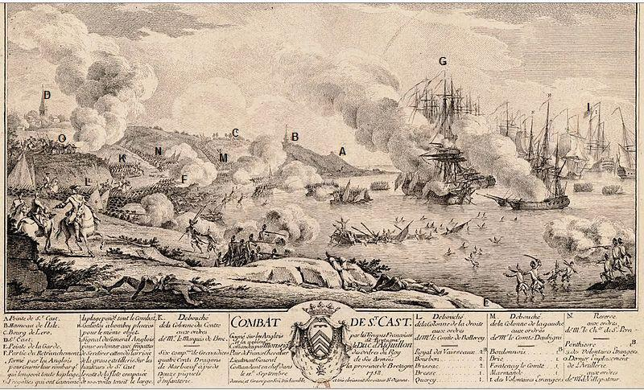
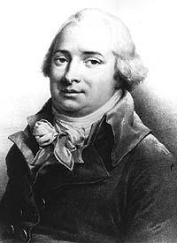
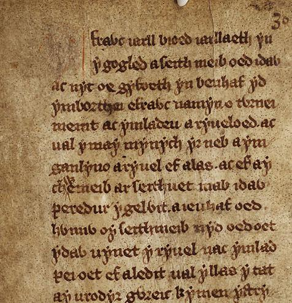

Le Combat de Saint-Cast
The Fight of Saint-Cast
Dialecte de Cornouaille
|
- 4 textes manuscrits dans le fonds de Penguern, qui paraissent retravaillés par lui-même et son collaborateur Kerambrun, ainsi qu'une - 1 feuille volante imprimée qui s'en inspire visiblement. Cependant, selon Luzel et Joseph Loth, cités (P. 389 de son "La Villemarqué") par Francis Gourvil qui se range à leur avis, ce chant historique ferait partie de la catégorie des chants inventés . |
 Saint-Cast 1758 par N.Ozanne. 'Et la noblesse de Bretagne' rajouté après coup au centre de la légende! |
- 4 MS in the Penguern collection, which appear to be worked out his collaborator, Kerambrun and himself, as well as at a - broadside print, evidently inspired by the previous version. However, according to Luzel and Joseph Loth, quoted by Francis Gourvil (p. 389 of his "La Villemarqué"), this historical song was " invented " by its alleged collector. |
Timbre indiqué dans le Barzhaz
( Seziz Gwengamp/Siège de Guingamp )
|
A. Pointe de St Cast
B. Hameau de l'Isle C. Bourg de Lero D. St Cast E. Pointe de la Garde F. Retranchement anglais G. Frégates anglaises |
H. Galiotes à bombes
I. Signal de retraite du général anglais à l'ar- rivée de notre artillerie sur les hauteurs de St Cast, le reste de notre flotte tenant le large |
K. Colonne du marquis de Broc
six compagnies de grenadiers 400 dragons de Marbeuf à pied 12 piquets d'infanterie |
Gagné par les troupes françaises et la noblesse de Bretagne (!) commandées par Mr le Duc d'Aiguillon Commandant en chef de la Province de Bretagne le 11 septembre 1758 |
L. Colonne du Comte de Balleroy
Royal Vaisseaux 2 bat. Bourbon 2 bataillons Brissac 2 bat. Bresse 1 bat. Quercy 1 bat. |
M. Colonne du Comte d'Aubigny
Bourdonnais 1 bat. Brie 1 bat. Fontenay le Cte 1 bat. Marmande 1 bat. 1er Volont. Etrangers |
N. Réserve du Chevalier
de St Pern . Penthièvre 1 bat. 3ème Volont. Etrangers O. Artillerie de M. de Villepatour |
| Français | English |
|---|---|
|
Ces voisins, le sont à jamais. Ils furent créés ici-bas En vue d'un éternel combat. 2. Comme je dormais l'autre nuit, Un son de trompe retentit Au Bois de la Salle. Il disait: "Attention, aux maudits Anglais!" 3. Quand à l'aube je me levai, Je vis les Anglais arriver. Leurs soldats étaient rassemblés: Habits rouges, harnois dorés. 4. Sur la grève ils étaient rangés, Quand approchèrent les Français, A leur tête était d'Aubigny, Dans sa main son sabre qui luit. 5. - En avant! cria d'Aubigny; Qu'aucun ne reparte d'ici! Courage, mes braves, allons! Suivez-moi donc! Sus aux Saxons!- 6. Alors les Français s'écrièrent Tous en chœur comme à la prière: - Ce d'Aubigny, nous le suivrons; Il est noble et bon compagnon! 7. Lorsque d'Aubigny combattit Pas un, qu'il fût grand ou petit, Qui n'écarquilla point les yeux Voyant ce guerrier valeureux, 8. Ses cheveux, ses habits, sa face Où le sang noir coulait à force, Ce sang qu'il tirait aux Anglais Jaillissant des cœurs qu'il perçait. 9. Au milieu du champ de bataille Tête haute sous la mitraille, Pas plus ému par les boulets Que par des boules de papier. 10. Les hommes de Basse-Bretagne Chantaient un chant rempli de hargne: "Celui qui sut vaincre trois fois, Il vaincra toujours, celui-là! 11. Dernièrement, à Camaret, On vit descendre les Anglais; Se pavanant sur l'océan, Voiles blanches gonflées de vent. 12. Ils sont tombés sur le rivage, Tels des ramiers ; un vrai carnage! Des quatre mille qu'ils étaient Pas un n'a pu s'en retourner. 13. A Guidel, ils sont descendus, Près de Vannes. S'ils avaient su! A Guidel, ils sont enterrés, Comme ils le sont à Camaret. 14. En Léon, face à l'Ile Verte, D'autres coururent à leur perte; Ils versèrent tant de leur sang Qu'on vit s'empourprer l'océan. 15. En Bretagne, butte ni tertre Où l'on ne voit leurs os paraître Que chiens et corbeaux ont rongés, Et pluie et vents décolorés." - 16. Les Anglais entendant ce chant Se figent, pleins d'étonnement. Musique et paroles sont belles: Ils semblent fascinés par elles. 17. - Archer d'Angleterre, dis-moi, Es-tu las, que tu restes coi? - La fatigue ne compte guère. Mais ces Bretons, ce sont nos frères...- 18. Aussitôt ce cri retentit - Fuyons tous! Nous sommes trahis! - Vers leurs nefs tous fuient à la fois. Mais il n'en réchappa que trois. 19. En mil sept cent cinquante huit Au mois de septembre, un lundi, Les Anglais ont, je vous le dis Eté vaincus dans ce pays. 20. Cette année-là, comme autrefois, Ces gens ont été mis au pas. Comme dans la mer les grêlons, En Bretagne fond le Saxon! conservés ou adaptés par La Villemarqué Traduction: Christian Souchon (c) 2011 |
Are, aye, each other's enemy. They were, to combat each other, Put in this world, and for ever. 2. I was asleep yesterday night, When a bugle was blown loud and bright, In the wood of la Salle it was blown "Accursed Saxons!" said its angry tone. 3. And as I rose the next morning I saw all these Saxons coming. I saw their soldiers drawing near. Gilded harness, red coats: they were here. 4. In battle array on the shore. And I saw, coming, the French corps, With General d'Aubigny at their head, Brandishing his glittering blade . 5.- Forward! Forward! d'Aubigny cried; No one of them shall save their hide! Cheer up, my boys, ahead, old guard! Follow me and let's hit hard!- 6. The French answer unanimously As they hear speak thus d'Aubigny: - Let us follow him - they all yell, A noble man, and brave as well! - 7. When d'Aubigny entered the fray All those who were present that day, Opened wide their eyes, seeing the blood That he caused to run in flood. 8. His hair, his face, his clothes still more Were stained all over with the gore That he got out of the Saxon Foe stabbed on that occasion. 9. He was seen on the battlefield Placid, stately, unconcealed And no more frightened by the gun Than if it had been shot for fun. 10. The men from Low Brittany sang Advancing after the harangue: - Whoever could three times conquer, Will be victorious for ever! 11. Not long ago, in Camaret The English had ventured a raid; O, they were boasting on the sea, With all their white sails on display. 12. However, they fell on the shore, Shot by our bullets, more and more; From the five thousands who came No one could go home, for shame! 13. In Guidel, too, they alighted, In the shire of Vannes located. And they were buried in Guidel, As in Camaret, I know well. 14. In Leon, near the Green Island, They once decided they would land; Had so much of their blood to shed That the blue ocean turned red. 15. In Brittany no hill or brae Where no bones are buried away; Torn to pieces by hounds and crows; That rain and the winds did expose." 16. England's bowmen hearing as much Suddenly have stopped, thunderstruck. Tune and words so well sounded That they were all astounded. 17. - England's lads, why do you demur? Are you so tired, that you don't stir?" - If we stop, it is not to rest: These men are Britons, and no jest!- 18. They had not yet finished their plea, When one cried - We're betrayed, let's flee! - And the Saxons rushed to the sea; However none escaped but three. 19. Seventeen hundred fifty-eight, I am giving it to you straight, In September, on a Monday, The English were driven away. 20. In this year, as custom has it, They were shown their way home. To wit: Hail falls on to the sea vainly. Saxons vanish in Brittany. maintained or adapted by La Villemarqué. Translation: Christian Souchon (c) 2011 |
Cliquer ici pour lire les textes bretons.
For Breton texts, click here.

|
La bataille de Saint-Cast
En septembre 1758, pendant la guerre de Sept ans, une expédition anglaise de plus de 10.000 hommes ayant à sa tête l'amiral Anson et le général Thomas Bligh fut repoussée à Saint Cast - Le Guildo, à 20 km à l'ouest de Dinard par une armée de 8.000 ou 9.000 hommes composée par le commandant militaire de la Bretagne, le Duc d'Aiguillon et dont une partie était placée sous le commandement du général Morel d'Aubigny. Après avoir pris et détruit le port de Cherbourg, les Anglais se dirigèrent sur Saint-Malo, mais le trouvant trop bien défendu, ils avaient décidé de rembarquer leurs troupes terrestres plus à l'ouest dans la baie de Saint-Cast. A peine l'opération commencée, les Français apparurent et leur artillerie bombarda la plage. Trois chaloupes pleines de soldats furent coulées et d'autres détruites sur la plage. Puis les Français attaquèrent à la baïonnette les 3.000 hommes restés à terre. Ils mirent en déroute cette arrière-garde qu'ils poursuivirent dans la mer, faisant 800 morts et plus de 700 prisonniers. Environ 300 marins périrent au cours de cette attaque. Comme le Duc d'Aiguillon avait dirigé les opérations du haut d'un moulin, son adversaire, le procureur général au Parlement de Bretagne, Louis-René de La Chalotais (1701-1785) railla: "Les Bretons se sont couverts de gloire et le petit duc de farine". Fraternisation brito-galloise Si ce chant est publié pour la première fois dans l'édition de 1845 du Barzhaz, la mélodie qui lui est assignée figurait déjà dans l'édition précédente de 1839, en accompagnement du Siège de Guingamp et elle avait été harmonisée par Friedrich Silcher dans l'édition allemande de 1841, celle de Keller et Seckendorff. Cette mélodie joue un rôle central dans la pièce de Villemarqué. Ce combat, nous apprend le petit-fils de l'officier qui commandait la réserve, le Chevalier de Saint-Pern , lequel toutefois "n'oserait garantir ce fait", mit face à face un détachement de montagnards gallois et une compagnie de Bretons de Tréguier et Saint-Pol-de-Léon. Les premiers s'avançaient en chantant un air national, également populaire en Bretagne. Les Bretons s'arrêtèrent et se mirent à entonner le refrain patriotique; les Gallois à leur tour restèrent immobiles et c'est en vain que dans les deux troupes on commanda le feu dans la même langue (ou presque)! Selon l'auteur de ce chant, tel que le Barzhaz le présente, le commandement anglais aurait considéré cette fraternisation comme une trahison, ce qui l'aurait déterminé à fuir... La Villemarqué indique qu'il existe plusieurs versions de ce chant et que celle-ci, vraisemblablement composée par un soldat cornouaillais dans son dialecte natal, lui a été procurée par Joseph de Calan , arrière neveu d'un officier breton qui participa à la bataille, comme le confirme l'héraldiste Pol de Courcy. De l'histoire ou de la poésie? Le touchant épisode que constitue cette fraternisation panceltique a rapidement suscité la méfiance de commentateurs tels que les continuateurs du Dictionnaire historique et géographique de la Bretagne de Jean Ogée qui écrivent en 1853: "Ce touchant récit... est...inconnu des trois narrateurs primitifs de la bataille [ bien que selon Francis Gourvil , pas moins de 5 auteurs rapportent cet incident, avant 1845: parmi eux, Fouinet en 1833, St Pern - Couélan en 1836, A. Brizeux en 1838 ]...Il est... difficile ...d'admettre cet épisode, encore qu'un homme éminent ait publié le texte même de l'air national devant lequel des armes ennemies s'abaissèrent...Que des Bas-Bretons aient...reconnu des Gallois et les aient épargnés, cela se conçoit; mais l'air national et les officiers qui en vain ordonnèrent de faire feu, sont de la poésie et non de l'histoire". L'illustre linguiste Joseph Loth (1847 - 1934) en 1897 trouve cette "chanson dite historique des plus suspectes" mais ne met pas en cause la bonne foi de La Villemarqué. C'est un scrupule que n'a pas son confrère Francis Gourvil (1889 - 1984) qui dans un article datant de 1947 dénonce cette pièce comme un faux inventé par le célèbre collecteur. M. Donatien Laurent , a fait justice de cette dernière accusation en permettant à Mme Eva Guillorel de publier la version originale du chant , telle qu'elle figure dans les carnets de collecte de La Villemarqué qu'il a déchiffrés. Le manuscrit de Joseph de Calan A la lumière de ce document où l'on distingue clairement deux écritures différentes, il apparaît que l'éminent collecteur a retravaillé le texte lacunaire transmis par de Calan (couplets 1 à 6), essentiellement pour développer la macabre description du massacre des Anglais (strophes a, b, c), reformuler le couplet 6 (strophe d) qui donne la date de la défaite anglaise (10 septembre 1758) et pour introduire la scène, décrite par Saint-Pern, de la fraternisation et des officiers britanniques criant à la trahison. (strophes e et f). Il convient de noter, en outre, que deux passages du manuscrit de Calan, strophe 4, se retrouvent, à de légères variantes près, dans le chant Duguay , noté par La Villemarqué, pp.187 et 188 du premier carnet de Keransquer. On les retrouve, ainsi que deux autres vers dudit "Duguay", dans les strophes 11 et 12 du chant du Barzhaz:
Le texte final de La Villemarqué Cette ébauche est la première étape d'une métamorphose poétique. Si l'on veut être indulgent, on verra une restauration , telle qu'on pratiquait cette activité au XIXème siècle, une sorte de Pierrefonds de la poésie bretonne, dans l'imposante version finale de quatre-vingts vers. Si on l'est moins, on y verra une nouvelle et grave entorse aux règles qui figurent dans la préface du Barzhaz à partir de l'édition de 1845 (cf. Les Séries ). Il ne s'agit plus de "restauration", mais de "dénaturation" d'un poème patriotique à la gloire de l'armée du roi, de son chef et de la nation. Il se retrouve amputé et dilué dans une nouvelle œuvre qui illustre une idée chère au "restaurateur": la communauté culturelle, toujours vivace et agissante qui unit, selon lui, les Celtes des deux côtés de la Manche . Seuls 20 vers se réfèrent directement au manuscrit de Joseph de Calan, et 13 à l'ébauche de La Villemarqué. A la page 10 du carnet 3, on trouve cette remarque où s'exprime l'antipathie des Bretons (La Villemarqué y compris) pour d'Aiguillon réputé méprisant à l'egard des Bretons: "Séjour de D’aiguillon à Lannion : Sa maitresse, la belle Fanchon, pour laquelle il fait le chemin de Perros. – Un jour son cheval butte sur la place de Lannion: "Hé allons donc, s’écrie-t-il, Mr de Kercheval ! " A moins que La Villemarqué qui écrit dans ses "notes": "Il y a plusieurs versions du 'Combat de Saint-Cast: l'une d'elles m'a été procurée par M. Joseph de Calan". veuille indiquer qu'il a disposé de plusieur sources dont une seulement figurerait dans les archives de Keransquer. Il pourrait y avoir puisé les éléments qu'il semble avoir inventés. Le chant de guerre du Capitaine Morgan Selon H. Corbes, dans son "Abrégé de musique bretonne" publié dans Gwalarn, N° 104-105 de juillet-août 1937, l'air fédérateur serait celui de "Rhyfelgyrch Gwyr Glamorgan". Ce titre (qui mélange le gallois et l'anglais) rappelle 2 airs connus du répertoire gallois: "Rhyfelgyrch gwyr Harlech" , "Le Chant de guerre des hommes de Harlech", qui a trait au siège du château de Harlech en 1648, et "Triban gwyr Morgannwg" ou "Cadlef gwyr Morgannwg". On vérifie aisément qu'aucune de ces deux mélodies ne ressemble à celle du Barzhaz. Un examen du répertoire gallois montre qu'il ne peut s'agir que du chant Rhyvelgyrch Capden Morgan ou "Forth to the battle!" dans la "traduction" de George Linley (en réalité, le premier vers semble signifier "Attache à ta ceinture la blanche épée de ton père..."). Il a trait à une insurrection galloise contre le roi Edouard I, en 1294, conduite par Morgan, un chef du Glamorgan. Le texte anglais commence ainsi: Onward to the fight, Swift as the eagle in his flight! Let not the sunlight o'er our pathway close, Till we o'erthrow our Saxon foes! Strong as yonder foaming tide, Rushing down the mountainside; Be ye ready, sword and spear, Pour upon the spoiler near. Winds! that float o'er us, Bid the tyrant quail, Ne'er shall his ruffian bands prevail! Morning shall view us fetterless and free, Slaves ne'er shall Cymry's children be. Heaven our arms with conquest bless, All our bitter wrongs redress; Strike the harp! Awake the cry! Valour's sons fear not to die. |
A la bataille!
Partons! En avant! Prompts comme l'aigle au firmament! Qu'avant le crépuscule nous ayons Terrassé l'ennemi saxon! Tels la vague qui déferle au loin, Nous dévalerons les flancs des ravins. Qu'un déluge de fer et de sang S'abatte sur les pillards menaçants! Vent qui souffles sois contraire au tyran! Chassons ces hordes de manants! Puisse l'aube voir tous nos fers brisés, Les fils des Gallois libérés! Que le Ciel, bénissant nos fanions, Redresse les torts que nous fit Albion! Harpes et chants, il faut retentir! Sang courageux ne craint point de mourir. Traduction: Ch. Souchon |
Le lien ci-dessus permet d'entendre un clip de démonstration interprété par Ivor Emmanuel et un chœur d'hommes.
Comme on l'a dit à propos de la complainte La dame de Nizon , La Villemarqué ne lâche pas la bride à son imagination en matière de musique. Il est peu vraisemblable que la mélodie du Barzhaz, d'ailleurs différente par quelques notes de sa jumelle galloise, n'ait pas été celle qui accompagnait réellement le texte transmis par de Calan, auquel elle s'adapte parfaitement. D'ailleurs, cet air fait sa première apparition dans l'édition de 1839, comme timbre du Siège de Guingamp , avant d'être convoqué dans celle de 1845 à l'appui de la thèse de la fraternisation, pour accompagner le "Combat de Saint-Cast". Notons que la version de "Guingamp" chantée par Marc'harid Fulup et enregistrée par François Vallée en 1900, bien que différente de celle du Barzhaz, s'en rapproche de façon certaine. On peut voir dans ces variations la preuve que la mélodie appartient authentiquement à la tradition bretonne.
L'hymne breton "Gwir Vretoned" qui se chante sur l'air gallois du "Capitaine Morgan" est une création bien plus récente (1935) de Paotr Treoure, nom de barde du prêtre et poète du Léon, l'Abbé Augustin Conq (1874 - 1953).
Autres "chants d'Anglais
Au cas où certains lecteurs anglophones se sentiraient blessés par ce poème où les Bretons ne ménagent guère leurs voisins d'outre-Manche, ils pourront se rassurer en lisant le texte de "Jeanne la Flamme" où nos compatriotes ne sont pas plus tendres avec leurs voisins d'outre-Couesnon!
Ces outrances verbales sont des figures de style qui appartiennent à un genre, le chant guerrier en général et le "chant d'anglais" en particulier, où elles sont habituelles.
Les affrontements franco-anglais des années 1689 à 1815 ont fourni la matière à une importante production de chansons bretonnes dans les deux langues, où s'affirme une tonalité patriotique française (louange du roi, prière ou toast en sa faveur) et où fleurissent ces clichés sanguinaires.
|
Ar Saozon a fellent ober brezel d'ar Vretoned
Hag a pozas o kamp e bord parez Gidel. Menasiñ e rejont ober d'an holl mervel. An Aotrou 'N Hospita l a lare: "Pa vomp marv, Piv hon resusito? Mes, pelloc'h a remed Pa vimp marv -" An Aotrou Petikour ha n'Aotrou Tinteniak , Tudjentil a enour ha komandanted vad: "Ni a refe kent, deus hon buhez sakrifis Kent evit ma vankfom da servichañ Louis!" |
Les Anglais qui voulaient faire aux Bretons la guerre
Avaient dressé leur camp aux abords de Guidel. Et menaçaient chacun d'un sort des plus cruels. Monsieur de L'Hôpital disait: "Lorsque la terre Nous aura, qui viendra donc nous ressusciter? Car à la mort, hélas, de remède il n'est pas!" Monsieur de Petitcour (*), Monsieur de Tinténiac , Gentilshommes d'honneur, chefs de guerre exercés Dirent "Nous préférons sacrifier nos vies Plutôt que de faillir au service de Louis." Petitcour= de Heydicourt ou d'Haudricourt: de l'Hôpital et d'Haudricourt étaient 2 colonels de dragons qui, avec le marquis de Tinténiac, aidèrent le gouverneur de Lorient à déloger les Anglais venus attaquer Lorient qui avaient installé leur camp à Guidel. |
La Villemarqué signale, on l'a dit, plusieurs versions du Combat de Saint-Cast.
S Le reste de la campagne de 1758 est évoqué dans deux autres chansons en breton qui relatent
De façon plus générale ces "chants d'Anglais" présentent une certaine unité stylistique et thématique passionnante à étudier, en dépit des pastiches qu'ils ont suscités, comme dans le cas présent.
La production de "chants d'Anglais" pourrait avoir débuté bien avant 1689.
Du fait que le manuscrit est annoté de la main de Kerambrun, Luzel, quant à lui, pense qu'il s'agit d'un faux...
Indiquons pour terminer qu'un grand nombre des informations ci-dessus est tiré de l'article d'Eva Guillorel et Donatien Laurent, « Chanson politique et histoire : le combat de Saint-Cast et les Anglais sur les côtes de Bretagne au xviiie siècle », Annales de Bretagne et des Pays de l’Ouest [En ligne], 114-4 | 2007, mis en ligne le 30 décembre 2009 .
In September 1758, during the Seven Years War an English "descent" involving over 10,000 soldiers led by Admiral Lord Anson and General Thomas Bligh was driven off at Saint Cast -Le Guildo, 20 km west of Dinard, by an army amounting to 8,000 or 9,000 men gathered by the military commander of Brittany, Duke d'Aiguillon . A brigade placed under the command of General Morel d'Aubigny included Breton volunteers.
After capturing and destroying the port of Cherbourg, the British had moved against Saint-Malo, but finding it too well defended, they had decided to re-embark the land forces further west in the bay of Saint-Cast. Hardly any soldiers had embarked when the French appeared and began a cannonade of the beach. Three landing boats full of soldiers were sunk, others were damaged on the beach. Then the French advanced against the 3,000 troops remaining ashore in a bayonet charge and routed the British rear guard into the sea with 800 killed and over 700 taken prisoners. The fleet suffered about 300 casualties.
Since Duke d'Aiguillon had supervised operations from the top of a wind mill, his enemy, the procureur general at the parliament of Brittany, Louis-René de La Chalotais (701 - 1785) joked: "The Bretons were covered with glory and the little Duke was covered with flour".
Welsh-Breton fraternization
If the song was first published in the 18545 edition of the Barzhaz, the tune accompanying it, was aldready included in the first edition dating 1839 as vehicle of the Siege of Guingamp for which Friedrich Silcher had composed an arrangement printed in Keller and v. Seckendorff's German edition of 1841. This melody was to play a pivotal part in la Villemarqué's version.
During the fight, as recorded by the grandson of the officer commanding the reserve, Chevalier de Saint-Pern , who, however, "dare not guarantee the fact", a detachment of Welsh highlanders had to face a company of Breton soldiers from Tréguier and Saint-Pol-de-Léon. The Welsh happened to sing an anthem the melody of which was popular in Brittany. The Bretons stopped and joined the Welsh in their song. The Welsh came to a stop too and there was no use for the officers of both armies to give the order to shoot in (roughly!) the same language!
According to the present song, at least as the Barzhaz presents it, the British command considered this surge of brotherly feeling as a treason that caused them to order the retreat...
This version of the song, of which admittedly several others are extant, was provided to La Villemarqué by Joseph de Calan , a great-great-nephew to a Breton officer who partook in the battle, as stated by the historian Pol de Courcy.
History or poetry?
This moving story of overall Celtic esprit-de-corps aroused very soon the commentators' suspicion. For instance the continuators of Jean Ogée 's "Historic and Geographic Dictionary of Brittany" wrote in 1853:
"This moving account...is unknown of the first three narrators of the battle [ however, according to Francis Gourvil , no less than 5 authors mentioned this episode before 1845: among them, Fouinet in 1833, Saint-Pern-Couélan in 1836 and A. Brizeux in 1838 ]... It is difficult to admit this episode, even if an eminent writer claims to have published the very lyrics of the war song that caused the foes to lay their arms...It is admissible that people of Lower-Brittany should have recognised and spared their Welsh brethren; but the story of the national anthem and the officers who loose control over their subordinates was bred by poetic fancy and can not be historical."
The famous linguist Joseph Loth (1847 - 1934) considers this "allegedly historical song most dubious" but does not question La Villemarqué's sincerity.
Far less prudent, his colleague Francis Gourvil (1889 - 1984) exposes in an article published in 1945 this piece as a fraud fabricated by the famous collector.
M. Donatien Laurent has disproved this radical accusation when he enabled Mme Eva Guillorel to publish the original version of the song , as recorded in La Villemarqué's note books which he has investigated.
Joseph de Calan's MS
In the light of this document where two different handwritings clearly appear, it is evident that La Villemarqué transformed the short MS procured from De Calan (stanzas 1 to 6) into a first draft whose main features are: an extended gruesome description of the final slaughter (stanzas a, b, c); a new form given to stanza 6 (in stanza d) stating the date of the battle (10th September 1758), so as to introduce the episode of the fraternization, borrowed from Saint-Pern, and the ensuing panic of the officers who suspect treachery (stanzas e and f).
|
"J. de Calan MS"
Stanza 4: lines 1 and 2 Stanza 4: lines 5 and 6 |
LV's "Duguay"
Stanza B: lines 4 and 5 Stanza D: lines 1 and 2 Stanza E: lines 1 and 2 |
"Barzhaz"
Stanza 11: lines 1 and 2 Stanza 11: lines 3 and 4 Stanza 12: lines 1 and 2 |
|
Manuscript of J. de Calan
1. Brittany, Britain though neighbours, Are above all competitors. Him who was ordered by the King To lead his army in fighting, We will follow through thick and thin He's noble and brave. We shall win. 2. When d'Aiguillon has set to work There's no one even in the murk That would not open wide his eyes To see how gallantly he rides. Let us hit, friends, let us hit hard! Let us the Saxon threat discard! 3. His hair, his clothes, his face still more, They were all over stained with gore, With flowing Saxon blood stained, When he stabbed them without restraint. Let us hit, friends, let us hit hard! Let us the Saxon threat discard! 4. At Camaret in former time The Saxons came our coasts to grime. They had spread out on the shore: They paid their debt in blood and gore. Showers of pellets in the airs Killed them all as if they were hares. 5. Dragoons, cavalry, infantry All of them, they did their duty; Gentleman, as well as farmer, Deserve to be held in honour. And so shall be all their offspring In future by our noble King. |
6. Now, in seventeen fifty-eight In a bay near Saint Malo strait, Upon the tenth of September Our army did bravely conquer And they drove away the Saxon Under gallant Louis de Bourbon [Penthièvre]. First draft by La Villemarqué a. The sands to the core now were drenched, The hounds returned with their thirst quenched, So much blood on that occasion. Was drained from the accursed Saxon! b. The glebe could not soak up their blood, It could not engulf such a flood Of Saxon blood after the fray Nor could the hungry birds of prey. c. The others who had heard that plea Cried "We are betrayed! Let us flee!" They rushed to their ships on the sea. However none escaped but three. d. Seventeen hundred fifty-eight, I am giving it to you straight, In September, on a Monday, The English were driven away. e. England's bowmen hearing as much Suddenly have stopped, thunderstruck. Tune and words so well sounded That they were all astounded. f. "England's bowmen, pray, tell me why..." Translated by Ch.Souchon |
The final version of La Villemarqué's poem
This draft is the first stage of a poetical metamorphosis, which may be understood by an indulgent reader as a restoration in the way of 19-century art, resulting in a sort of Breton literary Pierrefonds, a stately poem of eighty lines.
A less indulgent reader will consider it a momentous infringement of the rules set in the "Preface" to the Barzhaz, from the 1845 edition onwards (see The Series ). What was performed was not the "restoration", but the "denaturising" of a patriotic eulogy of the King's army, its leader and the whole nation. This original poem is now drastically reduced and diluted in a new work illustrating a conception most cherished by the "Restorer": the ever vivid and effective cultural community, which, in his view, unites the Celts on both sides the Channel .
Only 20 lines directly refer to de Calan's MS and 13 to La Villemarqué's first sketch.
On page 10 of notebook 3, we find this remark expressing the antipathy of the Bretons (La Villemarqué included) for d'Aiguillon, who was said to be contemptuous towards the Bretons:
"D’aiguillon's stay in Lannion: There dwelt his mistress, the pretty Fanchon, for whom he used to ride all the way from Perros-Guirec. - One day his horse stumbled on the Place de Lannion:" Hey come on, he cried, Mr de Kercheval (Lord Ker-Horse)! "
Unless La Villemarqué who writes in his "notes":
"There are several versions to the 'Saint-Cast song': One of them was contributed by M. Joseph de Calan",
hints herewith at several sources of which only one was found in the Keransquer archives. From these additional sources he maight have drawn the elements that look like he had invented them.
The war song of Captain Morgan
H. Corbes, states in his "Short History of Breton Music" published in the monthly magazine Gwalarn, N° 104-105 of July-August 1937 that this tune is identical with "Rhyfelgyrch Gwyr Glamorgan". This title (mixing up Welsh and English words) sounds like 2 popular Welsh songs:
"Rhyfelgyrch gwyr Harlech"
,
"The War-song of the Men of Harlech", recounting the siege of Harlech Castle in 1648, and
"Triban gwyr Morgannwg" or "Cadlef gwyr Morgannwg". It is easy to satisfy oneself that none of these airs may qualify for a rough parallel with the Breton song.
A brief examination of the Welsh repertoire shows that only one song may be considered, to wit, Rhyvelgyrch Capden Morgan
or "Forth to the battle!" in George Linley's "translation" (hardly a fitting word, since the 1st line means in fact: "Fasten to your belt your father's white sword..."). It refers to a Welsh insurrection against King Edward I, in the year 1294. Morgan was a chieftain of Glamorgan who led the insurgents. I think the Cymrish lyrics should translate as follows:
gleddyf gwyn dy dad;
Atynt fy machgen! dros wlad!
Mwg y pentrefydd gyfyd gyda'r gwynt,
Draw dy gymrodyr ânt yn gynt
Sych dy ddagrau, ar dy gyfrwy naid,
Gwrando'r saethau'n suo fel seirff dibaid.
Wrth dy fwa, hyn wna'th fraich yn gref,
Cofia am dy dad, fel bu farw ef!
Marchog i'w canol!
dangos dy arfbais,
Cyfod goch faner, dychryn y Sais!
Chwyth yr hen utgorn a ferwina'i glust,
Byw o'i enciliad bydd yn dyst.
Swn gorfoledd clyw yr ennyd hon,
Bloeddio 'Buddugoliaeth' tros Foel y don;
Bendith arnat, dos yn enw'r nef!
Cofia am dy dad, fel bu farw ef!
Your father's glittering sword!
All o'er the land, my boys, onward!
Wind, drive the smoke arising from our hearths
Away from our fellows henceforth!
Draw your dagger! On your saddle bound!
Listen to the hiss of arrows around!
At them! At them! Your arm be strong!
Or die like those to whose race you belong!
Ye knights amidst
us, your blasons display!
Scare them with your red flags away!
The bugler's breath to my ears is a treat!
May I live to see them retreat!
Cries of triumph shall rise in a while,
Victorious accclaims over hill and isle!
Blessing on you, in Heaven's name,
Who died worthy of your old fathers' fame!
Translated by Ch Souchon
The link above is to a demonstration clip sung by Ivor Emmanuel and a choir of men.
As stated in the comment to the lament The lady of Nizon , La Villemarqué controls his unrestrained fancy as far as music is concerned. The chances are that the tune printed in the Barzhaz, which, by the way, slightly differs from its Welsh twin, really was the vehicle of the lyrics sent by de Calan, since it scans them very accurately. On the other hand, this tune first appears in the 1839 edition of the Barzhaz where it accompanies the song Siege of Guimgamp , eight years before it was put, in the 1845 edition, in charge of corroborating the fraternization theory, as the tune to which the "Battle of Saint-Cast" was to be sung. It is remarkable that the "Guingamp" tune sung by Marc'harid Fulup and recorded by François Vallée in 1900, though different from the Barzhaz melody, undoubtedly should resemble it. These variations may be regarded as a proof that we are concerned with a genuine song from the Breton tradition.
The Breton anthem "Gwir Vretoned" that is sung to the Welsh tune of "Capden Morgan" is a far more recent creation (1935) of Paotr Treoure, alias the Reverend Augustin Conq (1874 - 1953), who was both a priest and a poet in the Breton province Leon.
Other "Saxon songs"
Should our English speaking readers feel hurt by the harsh wording of this poem where the Bretons don't treat very tactfully their neighbours beyond the Channel, they may make sure by reading the text of "Janedig Flamm" , for instance, that their French neighbours were ill-used by the Bretons in the very, very same way!
These vituperations are mere stylistic devices pertaining to the genre of martial poetry in general, and to the "Saxon songs" in particular where they are frequent clichés.
The naval confrontation between Britain and France in the period 1689 - 1815 gave rise to a large production of ditties in Breton and French languages proclaiming a French national sentiment ( praise of the King, prayers or toasts for him) and abounding in such bloody clichés.
|
Ar Saozon a fellent ober brezel d'ar Vretoned
Hag a pozas o kamp e bord parez Gidel. Menasiñ e rejont ober d'an holl mervel. An Aotrou 'N Hospital a lare: "Pa vomp marv, Piv hon resusito? Mes, pelloc'h a remed Pa vimp marv -" An Aotrou Petikour ha n'Aotrou Tinteniak , Tudjentil a enour ha komandanted vad: "Ni a refe kent, deus hon buhez sakrifis Kent evit ma vankfom da servichañ Louis!" |
The English decided to wage war against the Bretons
And put up their camp near the parish Guidel. They threatened to kill everybody. M. de L'Hôpital said: "Once we are dead Who shall wake us from the dead? Yet there is no remedy against death!" MM. de Petitcour (*) and Tinténiac , both of them Honourable gentlemen and valorous commanders, Said "We would sacrifice our lives Rather than fail to serve our king Louis." Petitcour= de Heydicourt or d'Haudricourt: De L'Hospital and Haudricourt were 2 colonels of dragoons who, with the marquis of Tinténiac, helped the governor of Lorient to repel the English coming to attack Lorient who had put up their camp in Guidel. |
La Villemarqué mentions, as we know, several versions of the Combat of Saint-Cast.
On the more patriotic broadside, this theme has a counterpart in the last three verses calling for prayers to be said for the King of France.
The rest of the 1758 campaign gave rise to two other songs in Breton recalling
Generally speaking, these "Saxon songs" show an undeniable stylistic and thematic unity which is worthwhile investigating in spite of the pastiches they gave rise to, as in the present instance.
The production of "Saxon songs" could have started long before 1689.
However, since the MS holds hand written remarks by Kerambrun, the folklorist Luzel considers it a forgery...
Much of the information above is drawn from an article by Eva Guillorel et Donatien Laurent, « Chanson politique et histoire : le combat de Saint-Cast et les Anglais sur les côtes de Bretagne au xviiie siècle », Annales de Bretagne et des Pays de l’Ouest [on line], 114-4 | 2007, posted on 30th December 2009 .

Emmanuel-Armand de Vignerot, Duc d'Aiguillon
.
Les Bretons et les Gallois pouvaient-ils se comprendre?
Could Breton and Welsh soldiers understand each other?
|
Voilà l'une des théories préférées de La Villemarqué. Dans ses "Contes populaires des anciens Bretons" (1842, page 355), il affirme que les paysans de Cornouaille comprennent plus facilement les "Mabinogion" que ceux du Glamorgan...
"Si l'on voulait rendre aujourd'hui ces contes parfaitement intelligibles, dans une édition populaire, destinée soit aux Bretons du continent, soit à ceux du Pays de Galles, il y aurait moins de changements à y faire de ce côté-ci du détroit."
A titre de preuve il cite le début de "Pérédur, fils d'Evroc" version du Livre Rouge d'Hergest (12ème siècle) auquel il superpose une version "bretonne" (cf. tableau infra). Le résultat est loin d'être convaincant. Beaucoup des mots "bretons" de son texte sont des néologismes. C'est ainsi qu'il utilise les mots "iarl" et "iarlezh" qui sont des emprunts évidents du gallois à l'anglais "earl" ("comte", parent de notre "Charles" et de l'allemand "Kerl"). Le "Breton moyen" du 19ème siècle n'aurait sans doute pas compris ces mots. Et pourtant La Villemarqué n'a pas craint de les inclure dans son édition révisée du Dictionnaire de Le Gonidec . D'autres mots n'ont pas le même sens: "emlazh" signifie "suicide" et non "combat" en breton, "kevez" est une racine signifiant "rivaliser" et non "biens" qui est "danvez". D'autres ne se correspondent pas: le gallois "gogledd" signifie "nord", le breton "gwalarn" signifie "nord-ouest". D'autres mots enfin repris tels quels ou à peu près du gallois, sont absents des dictionnaires bretons: "menec'h" (qui n'existe que dans le sens de "moines"), "emkanieno"... Ce qui était vrai au XIIème siècle, l'est encore plus aujourd'hui. Si la grammaire et le vocabulaire sont, dit-on, assez semblables, les systèmes phonétiques, influencés par les langues voisines respectives, sont très différents. Un locuteur gallois comprendra sans doute la phrase bretonne "ev ar gwin-mañ!" (goûtez-moi ce vin!) et un Breton la phrase correspondante galloise "yf y gwin 'ma!", mais des phrases plus élaborées seront de l'hébreux pour l'un comme pour l'autre. Dans le chant gallois cité ci-avant, les bretonnants reconnaîtront sans doute quelques mots, mais guère plus: cleddyf (kleze), gwyn (gwenn), tad, mwg (moged), sych (sec'h), saethau (saezhoù), braich (brec'h), cref (kreñv), marchog (marc'heg), arfbais (arouez), Sais (Saoz), chwyth (c'hwez), hen, byw (bev), swn (son), clyv (kleved), ton (tonn), bendith (bennozh), enw (añv), nef (neñv), marw (marv) |
This is one of La Villemarqué's favourite theories. In his "Old Breton folk tales" (1842, page 355), he asserts that Cornouaille country folk easier understand the "Mabinogion", than do the Glamorgan farmers...
"If we were to make these tales intelligible to average readers in Brittany or in Wales, there were less changes to be done on this side than on yonder side of the Channel."
As a proof he quotes the beginning of " Peredur, son of Evrok" in the "Red Book of Hergest" version (12th century) with a "Breton" version superposed on it (see table below). It is far from convincing, since many of the "Breton" words he uses are neologisms. For instance the words "iarl" and "iarlezh" are evidently borrowed by the Welsh from the English "earl" (related to our "Charles" or to German "Kerl") and were certainly not understood in 19th century Brittany. Nevertheless La Villemarqué included them in his new edition of Le Gonidec 's Dictionary! Some words have different meanings: "emlazh" means "suicide", not "combat" in Breton; "kevez" is a root meaning "rivalizing", not "riches" which is "danvez". Other words don't translate one another: the Welsh "gogledd" means "nord", whereas the Breton "gwalarn" means "Nord-West". Other words again that are literarily copied from the Welsh, won't be found in any Breton dictionay: "menec'h" (exists only with the meaning "monks"), "emkanieno"... These remarks apply to the 12th century. They are still more relevant nowadays. If grammars and vocabularies are allegedly rather similar, the phonological systems, influenced by their respective neighbour's language, are very different. A Welsh speaker will certainly understand the Breton sentence "ev ar gwin-mañ!" ("drink this wine") and a Breton speaker its Welsh counterpart "yf y gwin 'ma!", but more elaborate sentences are not mutually intelligible from native speakers of these languages. In the Welsh song above, Breton-speakers will recognize very likely at the most a few words and not more: cleddyf (kleze), gwyn (gwenn), tad, mwg (moged), sych (sec'h), saethau (saezhoù), braich (brec'h), cref (kreñv), marchog (marc'heg), arfbais (arouez), Sais (Saoz), chwyth (c'hwez), hen, byw (bev), swn (son), clyv (kleved), ton (tonn), bendith (bennozh), enw (añv), nef (neñv), marw (marv). |
| Manuscrit | Cymraeg | Brezhoneg | Français | English |
|---|---|---|---|---|
|
 |
Efrawc iarll bioed iarllaeth yn y gogled. A seith meib oed idaw. Ac nyt oe gyfoeth yn beuhaf yd ymborthei Efrawc, namyn o twrnei- meint ac ymladeu a ryueloed. Ac ual ymay mynych yr neb a ym- ganiy no a ryuel ef a las. Ac ef ay chwe meib. Ac seithuet mab i anaw Peredur y gelwit. A ieuhaf oed hwnnw oy seith meib. Nyd oed oet ydaw uynet y ryuel nac ymlad. Pei oet ef aledit ual yllas y tat a y urodyr.... |
"Iarl" York a biaoue ur "iarlezh" e tu ar walarn. Ha seizh mab oa dezhañ. Ha neket eus e zanvez peurvuiañ en em bouete York, nemed a tourne- zoù hag emgannoù ha brezelioù. Hag evel ma c'hoarvez da neb a em- breg ar brezel, eñ a voe lazhet hag e c'hwec'h mab. Hag ur 7vet mab oa dezhañ Peredur e añv. Hag ar yaouankañ a oa hennezh eus ar seizh mab. N'oa an oed dezhañ moned da vrezel nag emgann. Panevet-se, e vije bet lazhet 'vel e tad hag e vreudeur... |
Le comte de York possédait un comté dans le nord et il avait sept fils; et il vivait moins de ses biens, cet York, que des tournois, des combats et des guerres. Mais, comme il arrive à ceux qui s'adonnent à la guerre, il fut tué avec six de ses fils. Le septième avait nom Pérédur. C'était le plus jeune des sept fils. Il n'avait pas l'âge d'aller à la guerre ou au combat. Sinon, il eût été tué comme son père et ses frères... |
The earl of York possessed an earldom in the North. And he had seven sons. Not by wealth did he maintain himself, this York, but by tourna- ments and combats and wars. And as often happens to those who follow the wars, he was killed. And so were six of his sons.The 7th son was named Peredur. He was the youngest of the seven sons, but was not old enough to fight or go to war. or else he would have died like his father and brothers... |